散在
押さえが、Excel・電話・LINE に散らばっている
どの機材を誰が押さえているのか、1か所で見られません。
映像・音響・照明・イベント・レンタル会社のための、機材と人の予約ボード
「この日これ空いてる？」
「誰が押さえてる？」に、一目で答える。
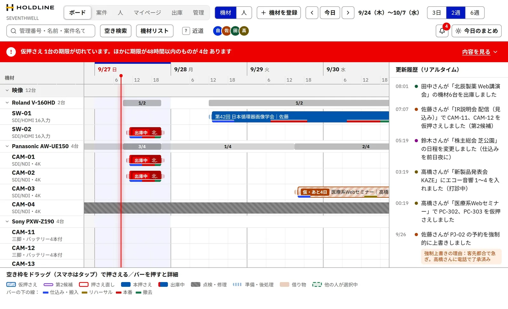
画面はデザイン見本から撮影しています。写っている会社名・案件名・人名・電話番号などはすべて架空です。実際のアプリとは細かいところが異なる場合があります。
散在
どの機材を誰が押さえているのか、1か所で見られません。
確認
そのたびに表を開いたり、人に聞いたりする手間がかかります。
重複
同じ機材や人に、別の案件の予定が重なってしまいます。
HOLDLINE は、機材と人の予定を1枚のボードにまとめ、ダブルブッキングと確認の手間を減らします。
予約ボード
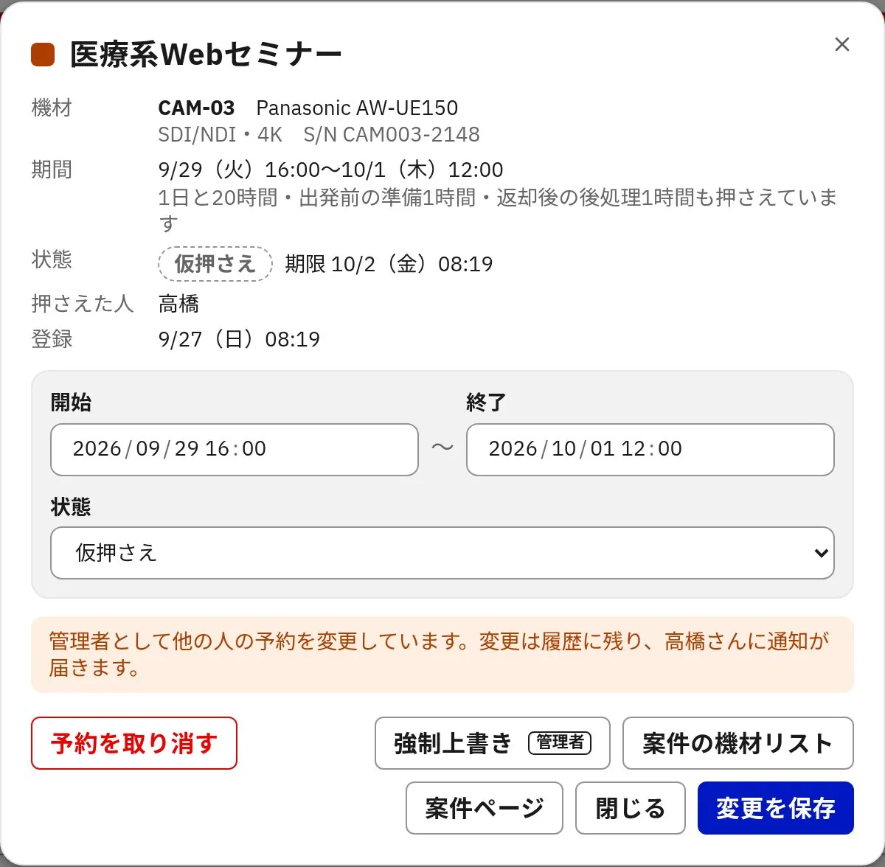
予約の詳細
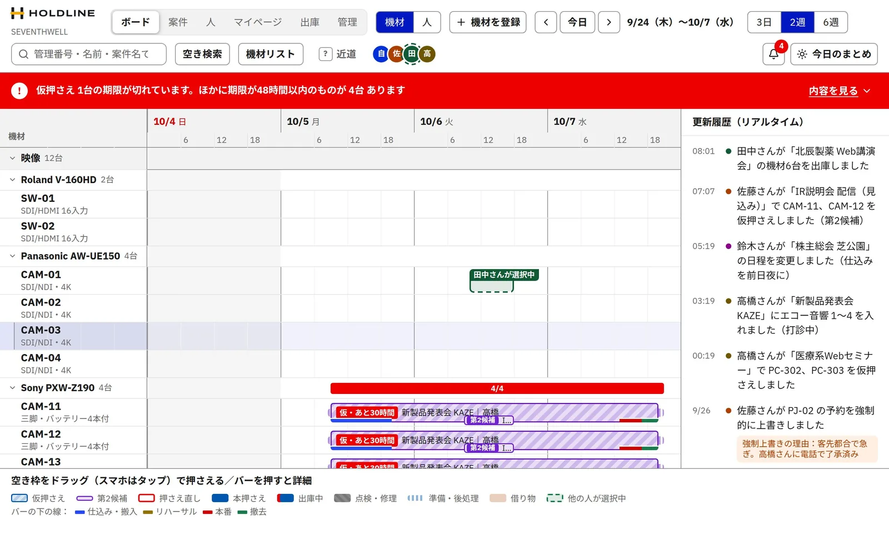
リアルタイム
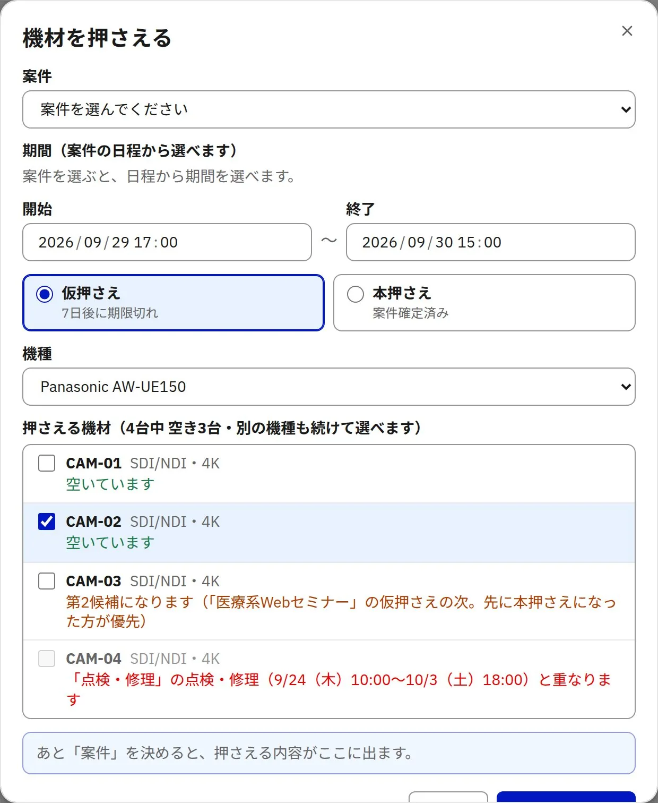
期限つきの仮押さえ
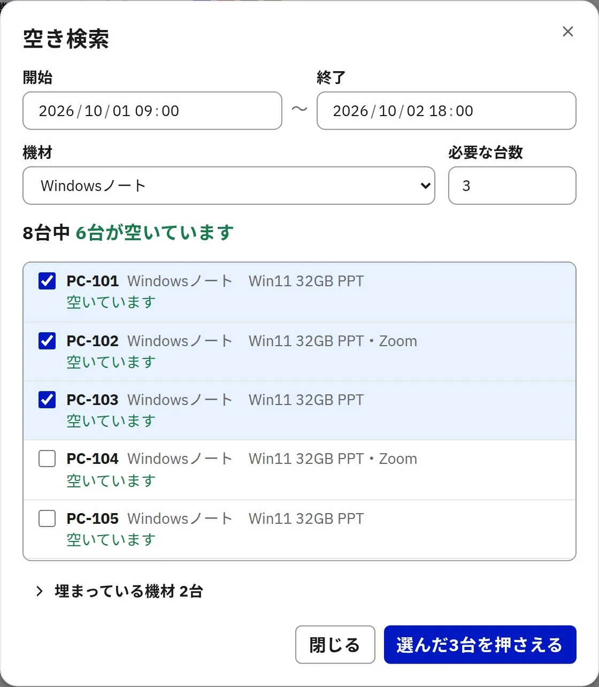
空き検索
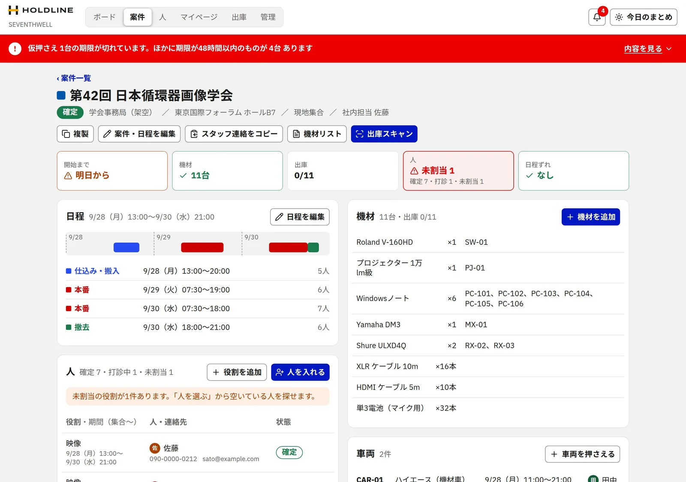
案件ページ
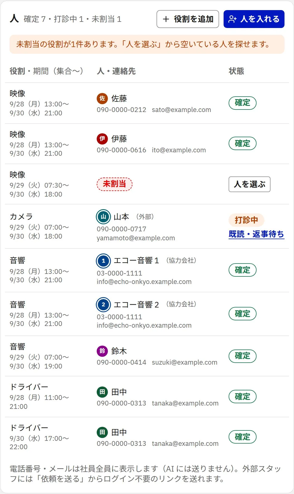
人の手配
同じ案件のデータから
見積
案件の機材と人から見積書を作り、印刷できます。
リスト
案件ごとの機材リストを、印刷・Excel・テキストで出力します。
通知
変更・依頼・期限・メンションを、アプリ内のベルでお知らせします。
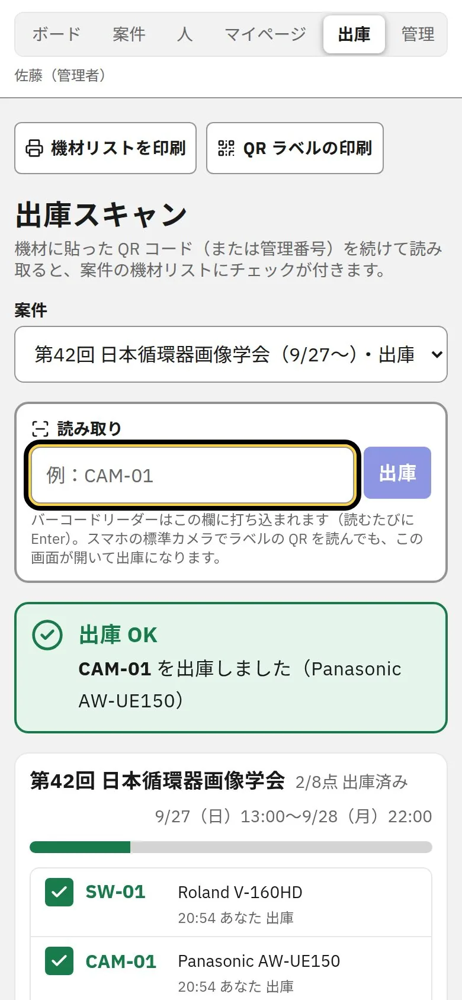
出庫（QR）
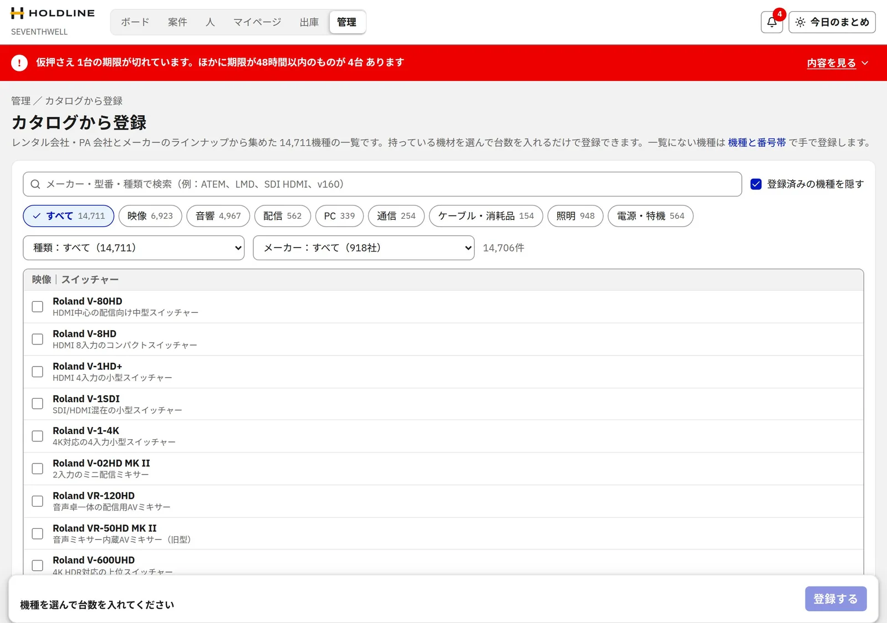
機材の登録
スマホ版（開発中）
現場からスマホで空き確認・出庫。スマホ版はいま作っている途中です。
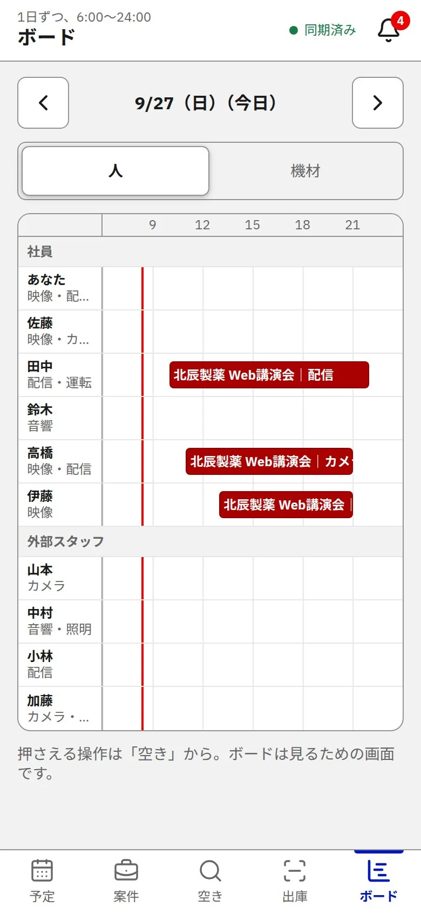
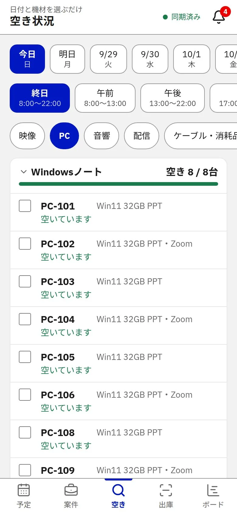
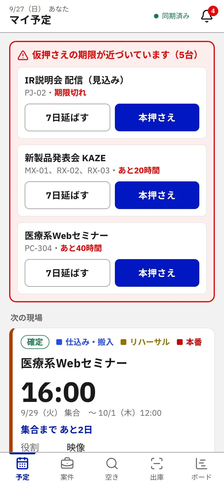
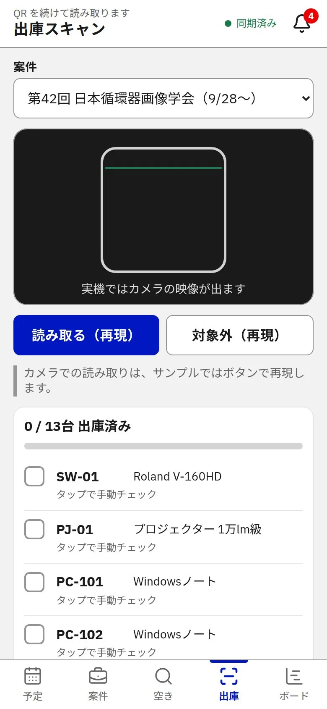
| 機能 | 内容 |
|---|---|
| 予約ボード | 機材・人・車両の予定を時間軸で表示。空き枠をドラッグして押さえる |
| 仮押さえと期限 | 期限つきの仮押さえ。期限が近いもの・切れたものを画面上部で知らせる |
| 第2候補 | 先に押さえた人がいても、後ろに並んで待てる |
| 空き検索 | 日時と機種を指定して、空いている機材を探す |
| 人の手配 | 社員・外部スタッフ・協力会社を案件の役割に割り当てる |
| 案件ページ | 日程（仕込み・本番・撤去）、機材、人、車両、持ち物チェック、コメントを1ページに |
| 見積 | 案件の機材と人から見積書を作り、印刷する |
| 出庫（QR） | 機材の QR ラベルを読み取って出庫を記録。ラベルの印刷も可能 |
| 機材リスト | 案件ごとの機材リストを印刷・Excel・テキストで出力 |
| 通知 | 変更・依頼・期限・メンションをアプリ内のベルで知らせる |
| 更新履歴 | だれが何を変えたかをリアルタイムで表示 |
| 監査ログ・データの保護 | すべての操作の記録、ゴミ箱からの復元、毎日のバックアップ |
操作はすべて記録され、取り消しや毎日のバックアップで誤操作から戻せます。